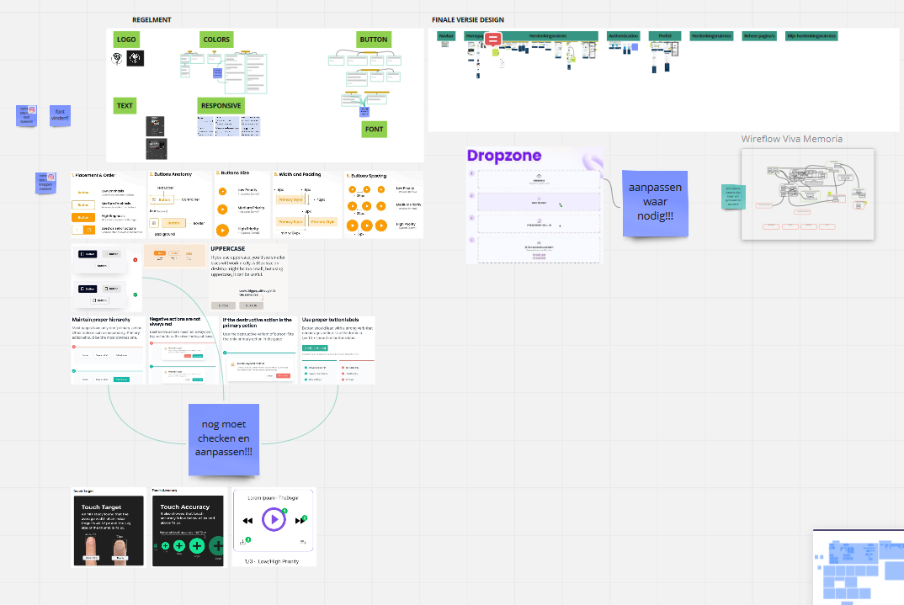

Reflectieverslag, week 10
22/11/2021 - 26/11/2021Deze week ging het heel goed en was heel leerzaam. Ik werk op finale versies van gemaakte design pagina's en heb meer ondezoek gedaan voor UX/UI design en uiteraard veel erover geleerd. Op basis daarvan heb ik veel veranderingen gemaakt in mijn vorige design pattern. o.a. gebruik van gelijke type van icons, gebruik van icons bij knoppen, standaard size voor buttons, primary, secondary en teritiary buttons, kleur van buttons, text bij buttons, perioriteit van buttons, text size enzo.
Ik heb ook een algemene documentatie van regels gemaakt voor alle front-end developers zo kan iedereen de regels snel vinden en toepassen.
Volgende taken heb ik gedaan:
- UX/UI design
- mobile versie herdenkingsruimte
- nieuwe design voor mijn bijdrages pagina begonnen
- aanpassingen van knoppen
- documentatie van regels voor front-end
- herdenkingsruimte V8.0
- alle types van icons gelijk gemaakt
- finale versie van "herdenkingsruimte aanmaken"
- test voor functionaliteit
- design voor Validatie van herdenkingsruimte aanmaken voorgesteld
- finale mobile versie Authenticatie
- finale versie profiel aanmaken
- editeren en aanpassen van icons
- finale versie navbar
- finale versie herdenkingsruimte editeren
- finale versie profiel valideren
- finale versie profiel mobile
Maandag:
-
Wat is UX- en UI-design?
bron: linkuUX-design en UI-design zijn twee termen die vaak voor hetzelfde worden gebruikt, maar andere betekenissen hebben.
Wat is UX-design?
UX-design staat voor user experience design. Bij UX-design staat de ervaring van de eindgebruiker, degene die het product gebruikt, centraal. Dat kan gaan over een website, app, of tastbaar product, zoals een mobiele telefoon.
Een UX-designer bekijkt of er aan de belangen van een klant wordt voldaan en stelt aanpassingen voor waar nodig. Een doel van een UX-designer is de complete ervaring te optimaliseren, van bewustwording tot het product aanbevelen aan vrienden. Dit heet ook wel de customer journey. Door constant met het totaalplaatje bezig te zijn, kan de gebruiksvriendelijkheid worden gegarandeerd. Daarom is het van belang om een UX-designer in het gehele proces mee te laten draaien: van strategisch plan tot optimalisatie van het product ver na de oplevering.
UX-researcher vs. UX-designer
De grenzen van het vakgebied zijn niet helemaal afgebakend. De Nielson Norman Group, een van de grootste UX-bedrijven ter wereld, erkent twee functies binnen UX: UX-researcher en UX-designer. Een UX-researcher focust zich voornamelijk op onderzoeken en interviewen van gebruikers. Een UX-designer focust zich meer op het vertalen van de gebruikersbehoeften naar een ontwerp.
Wat is UI-design?
UI-design staat voor user interface design. Het is een vrije vertaling van grafisch ontwerp, maar dan digitaal. Waar een UX-designer functioneel ontwerpt, ontwerpt een UI-designer emotioneel. Een UI-designer ontfermt zich over de complete look and feel van een product: de uitstraling, de presentatie, de leesbaarheid, de kleurenpsychologie, de interactie. Een UI-designer ontwerpt een product van buttons tot animaties. Het doel van een UI-designer is om de branding toe te passen, de juiste afstemming te vinden tussen functioneel en emotioneel en het afleveren van een compleet design.
UI-designer vs. web designer vs. digital designer
Webdesigners focussen zich puur op (responsive) webervaringen. Een digital designer neemt ook andere uitwerkingen mee, zoals mobiele apps. Als UI designer mag je jezelf dan ook digital designer noemen en vice versa.
UI-designer vs. product designer
Product designers houden zich bezig met het ontwerpen van platforms. Een platform is bijvoorbeeld een dashboard, een beheerpaneel of een app. Enkele bekende platformen zijn Trello, Spotify en Notion. Product designers zijn UX- en UI-designers in één.

Het verschill tussen UX- en UI-design -
mobile versie herdenkingsruimte
-
het voorstellen van nieuwe design voor "mijn bijdrages" pagina begonnen
-
nog aantal aanpasingen bij knoppen, alle knopen ovaal gemaakt, o.a.
-
freepik website
Miljoenen gratis grafische bronnen. ✓ Vectoren ✓ Stock Foto's ✓ PSD ✓ Pictogrammen ✓ Alles wat u nodig hebt voor uw creatieve projecten.
Dinsdag:
-
documentatie
o.a. text:
color:
-
herdenkingsruimte V8.0
Woensdag:
-
gelijke type icons
Er zijn verschillende types van icons. Een van UI-design regels is dat gelijke type van icons gebruiken.
Ik heb voor buttons "Basic Straight Lineal" en voor tabs "flat" icons gebruikt. Vorige keer had ik twee types door elkaar gebruikt, nu alles correct aangepast.

Basic Straight Lineal voor buttons flat voor tabs -
"herdenkingsruimte aanmaken" pagina finale versie beginnen(verbetering van vorige versie).
Donderdag:
-
test van functionaliteit van Update van herdenkingsruimte. Alle sections getest(met drie browsers Firefox, Chrome, Brave) waar nodig en niet OK heb ik een comment met een screenshot toegevoegd.
-
"herdenkingsruimte aanmaken" pagina finale versie afgemaakt.
Een van de UX-design regels is dat zoveel mogelijk alles voor user gemakkelijk maken; bvb wanneer user een file wilt toevoegen, kunt hij/zij op knop drukken dan een file kiezen of een andere gemakkelijke weg is drag en drop de file. Hiervoor staat een library klaar. Ik heb het ook klaargezet op miro.
-
"herdenkingsruimte aanmaken" pagina valideren
Hier bij een correct antwoord gaat een groen vinkje getoond worden en bij een fout of ongeldig antwoord een error met nodige aanpassing.
-
finale moblile versie authenticatie
-
finale versie profiel
Vrijdag:
-
gepaste icons gezocht en geediteerd
In het begin had ik alleen icons gekozen die gelijke designs hebben. Daarna realiseerde ik dat ik die editeren kan volgens ons palette van kleuren.
-
navbar finale versie weer aangepast
-
finale versie "herdenkingsruimte editeren"
-
finale versie profiel valideren
-
finale versie profiel mobile